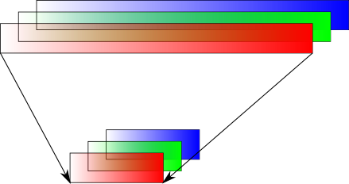
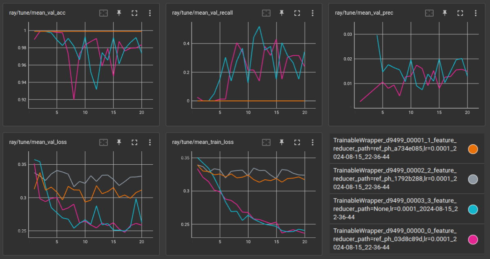
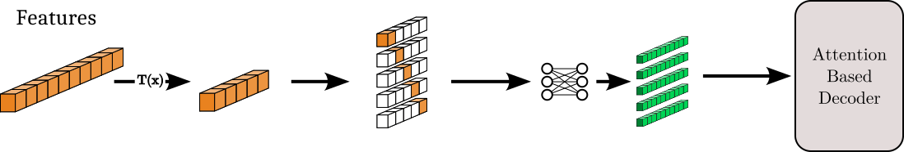
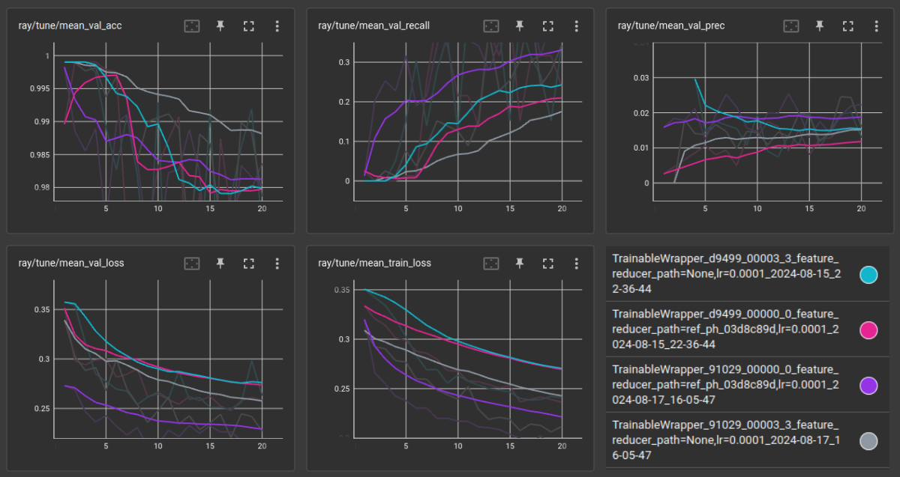
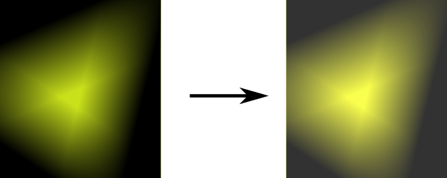

While the competition proceeds, I will attempt several iterations of a
classifier model. These will be a combination of my own ideas, research, and
ideas from the community Kaggle provides.
For each model I provide preprocessing options. Some preprocessing is
strictly necessary, but some make work in combination with certain models
better than others. How the preprocessing options are used will be specified
for each model. For the ISIC dataset, two major components exist. For each
skin lesion their is an image and a set of recorded features about the case.
Both must be preprocessed, but are done so distinctively.
Rescaling Color - Color in images is represented by 3 channels per
pixel. One each for red, green, and blue. The intensity of the color in
their respective channel is described on a range from 0 to 255. Machine
learning models often do better on smaller scales so it is important to be
able to redefine the intensity. In general, this process will linearly scale
the channels (e.g. map [0,255] → [0,1]).

Padding - The images of the dataset are all different dimensions; varied
widths and heights. For most models, it is important they be consistent. One
way to accomplish this is simply expanding the smaller images to match the
largest one. Padding will add pixels around the edges of an image to create
the desired dimensions. The extra space can be filled in many ways, but for
our purposes the filled space will match the edge-most pixels of the
original image.
Cropping - Another way to resize all images consistently, is to crop the
larger images to match the size of the smallest image. This has an added
benefit of augmenting our dataset in that most images will have multiple
representations, as a window smaller than the image is moved randomly about
to create the cropping.
Selection - Choosing which features are relevant and which might leak
target information to the model in training is important to the
generalization of the model. A few examples:
Features like ID tags can be excluded for being unique and arbitrary.
Features which all contain the same value can be can be excluded for
being uninformative.
Features which describe biopsy results can be excluded for leaking
target information (as a benign lesion would have no biopsy results).
Ordinal Encoding - Some features are made up of various categories.
If these are described in text, it is difficult for many models to use.
Since numerical values are more easily understood, each category
within a feature a is assigned unique number, easily translating the
information while preserving the idea behind the categories.
Fill NaN - When data is incomplete, values are generally still
expected by the models for every data point. So, a decision must be
made on how to fill in missing data. Average values from the data
points that are complete can be used, or just a value that would
otherwise never exist for that feature.
A vision transformer taking features as query tokens for the decoder. Image and
features are preprocessed, features are fed to a feature reducer, then all
combined by a transformer to produce a classification.
Images - All image channels are linearly rescaled from [0,255] to [0,1].
In the case of the ISIC dataset, the smallest images forced a smaller cropping
of images than desired, so first images are padded to 200x200 (images larger
than this are unpadded), then all images are cropped to 125x125. The cropping
window positioning is selected randomly each time the image is loaded from the
dataset.
Features -
Exclusions: Identification features are excluded from training data for being
irrelevant to diagnosis. These include “isic_id”, “patient_id”, “lesion_id”,
“attribution”, “copyright_license”. Further, features which exist only because
of a confirmed diagnosis are excluded, including “iddx_full”, “iddx_1”,
“iddx_2”, “iddx_3”, “iddx_4”, “iddx_5”, “mel_mitotic_index”, “mel_thick_mm”,
“tbp_lv_dnn_lesion_confidence”.
Ordinal Encoding: All text classifications which remain are assigned a
unique (within each feature) id number in place of the text description.
Fill NaN: Some “age_approx” values are missing, so these are filled as
-1 to help the model distinguish and lean less on this less distinctive
information.
Fig. 1 shows how the information provided by the ISIC dataset is
processed. First, a feature reducer transforms the features which compliment the
images. This focuses the model on the most meaningful feature information
allowing for more effective use of the available data. In particular, for this
iteration of the model, Principal Component Analysis (PCA) is used including
enough dimensions to explain 99.99% of variance in the data.
Next, embeddings are created for both the image and the reduced feature set.
For the features, this is a small fully connected neural network; 2 layers with
a ReLU activation in between, the initial layer 64 nodes wide, the next twice
that, with the idea to create two 64 feature queries for the transformer
decoder. For the image, two embeddings are created. One, a patch embedding to
reduce the sequence length input into the transformer encoder, following the
idea of Vaswani et al. [VSP+23]. Here, a patch of pixels
have their channel values concatenated, trading a greater number of features for
fewer transformer inputs. Further, a linear transformation is applied to allow
for varied patch sizes while maintaining a consistent feature dimension between
all embeddings. Two, a positional embedding is used to maintain information of
relative placement between patches. An embedding space of learnable parameters
is created the size of NxM, where N is the number of patches and M the desired
dimension of the features (again, 64 in this case).
The image embeddings, patch and positional, are then summed before taken as
input to the attention-based transformer encoder. The encoder has 4 layers of
attention with 8 heads, add and normalization, and 1024 dimension feed forward
networks (typical transformer encoder layers provided by
Vaswani et al. [VSP+23]). The result then used as memory in
conjunction with the queries created of the feature embeddings as input to the
decoder. The decoder is of similar dimension to the encoder.
Finally, the two queries create 2 sets of 1024 dimension outputs from the
transformer, which are flattened and passed to a linear layer to reduce all the
information down to logits representing whether the lesion is benign (dim 0) or
malignant (dim 1).
To train the model first the feature reducer, PCA, is fit to the available
feature data. This process is quick and straightforward.
The trained feature reducer can then be used to feed the classifier model.
Training the classifier requires a balancing of the classifications. There
exist 400,666 benign lesions to 393 malignant, an imbalance which causes
little to be learned about malignant lesions. To address this, all available
malignant examples are duplicated within the dataset to create a roughly
equal number number of positive and negative classification examples.
With a balanced training set, a K-fold scheme is used to divide the dataset
into training and validation subsets. 4 folds were used in training.
An Adam based optimizer is used for its ability to achieve reasonable
results without significant effort put into tuning of hyperparameters.
To assess loss, cross entropy is used, taking the logits of the transformer
compared to the target provided by the data set.
Over 4 iterations over the 4 folds, accuracy, precision, and recall end up
over 99%. However, once tested in competition, the score achieved is quite
poor, an pAUC of 0.021.
A poor score was expected, as multiple epochs have not yet been introduced
to the training regimen. However, given the training results compared to the
test, it is clear there is also a significant amount of information leakage.
Care must be taken in the balancing of the dataset so that some of the
malignant examples are held for the validation set and are in no way a part
of the training set. Further, it is important the K-fold process not use the
same model for different folds. Attention to these issues should make for a
better generalizing model.
Weights in the loss function may also help better balance the dataset and
enable better generalization, but will come at a cost of requiring many
training epochs.
Taking from the lessons learned in 1.0, corrections have been made to
prevent information leakage between training and validation data.
Additionally, scalable training has been introduced courtesy of the Ray
python library [MNW+18].
To address the training set class imbalance, and to avoid data leakage,
weights have been applied to the cross entropy loss calculation. The impact
of loss calculated based on benign labels then is significantly less than
that of the malignant labels, with a weight of 393/401,059 to malignant’s
400,666/401,059. Given the very few number of malignant examples, it is
still expected many epochs will be necessary for good performance.
Further, the K-fold training scheme has been revised to create as many
models to train as their exist folds. However, for this training round in
particular, a single model is trained, and the dataset is simply split,
using 80% of it for training and the remaining 20% for validation, ensuring
a proportional number of classification examples in each split.
A future goal remains to balance the the dataset by duplicating malignant
examples. Each epoch will be more effective, and it affords the opportunity
to augment the dataset in other ways like various transformations of the
images.
With Ray [MNW+18], hardware
requirements can be defined per training instance. Then, depending on the
resources made available to the ray server, multiple training instances can
be run simultaneously, seen below in Fig. 2.
Additionally, Ray provides a tuning module which allows an easy means of
exploring multiple training configurations, along with the application of
optimization algorithms. Specifically, for this version, 4 feature reduction
techniques are explored: none at all, and principal component analysis fit
to explain 80%, 99%, and 99.99% of data variance.
Much more promising than the previous version, validation results are now
much less than perfect, even after 5 times the training iterations. It seems
the data leakage problems have been addressed. Then, our validation results
are much more reliable in determining effective models.
Fig. 3 shows our slowly converging loss, true for both the
training and validation set, meaning learning is occurring and at least some
generalization of whats being learned can be expected. For this dataset,
because of the large proportion of benign results, ‘accuracy’ is poorly
representative of the models capability with respect to correctly
identifying malignant lesions. So as exciting as the greater than 99%
accuracy may be, more importantly to this case we track precision and
recall, focusing on the malignant examples.

Fig. 3 Training results for classifier trained with PCA explaining 99.99%
(00000), 99% (00001), 80% (00002) variance, and no feature reduction
(00003).¶
While no result for recall or precision is great in
Fig. 3, it is clear that no feature reduction, and PCA
capturing the most variance at 99.99% perform best. So, these are submitted
to the kaggle competition to ensure we are on the right track, with a marked
improvement in pAUC of .100 for the version using PCA, and .109 for the
version with no feature reduction at all.
Seen in Fig. 3, precision and recall leave a lot to be
desired, yet it is clear the models are still learning from the continually
declining loss. Additional epochs will likely be of great use to the models,
though will cost significant time. A more complex learning rate scheme may
also be of use, scheduling a decaying rate for instance, enabling aggressive
learning up front, while still including nuanced learning capability toward
the end.
Recognizing 2 decoder feature queries as an arbitrary choice, I have
modified the sequence the decoder receives to be a set of queries, one for
each feature.
The feature set, reduced or otherwise, is separated creating
a vector for each feature where all other features are zero. These vectors
are then fed to an embedding space, a dense neural network, which first
linearly projects each vector individually, passes that projection through
an activation function, then performs another linear projection
interconnecting the results. This provides the vectors a chance for
embedding considering only themselves as well as an embedding based on
relationships. These embedded feature vectors are then passed to the
decoder. The updated process is visualized in Fig. 4,
all other elements to the model remain the same.

Fig. 4 Update to feature embedding process, including a mask to allow each
feature to produce a decoder query.¶
Fig. 4 shows a the new feature embedding scheme
much improved, particularly for the model including feature reduction, as
accuracy, precision, and recall all score higher. For the model without
feature reduction, precision scores as well as the previous models, lags in
recall, but seems to do considerably better in accuracy. The final test then
is a submission to the Kaggle competition, and the model with feature
reduction scores 0.131, while the model without scores 0.138.

Fig. 5 Training results for classifier trained with old feature embedding
structure (d9499) and the new structure (91029), coupled with PCA
explaining 99.99% (00000) and no feature reduction (00003). Results have
been smoothed for clarity.¶
The most obvious lesson is that the metrics currently used still make it
difficult to discern which model will perform best. Though more complicated,
a pAUC metric run during validation would be more relevant to the goals of
this competition.
Clearly the structure of the embeddings fed to the decoder is important. It
could be the increased length of the sequence that is more useful, the
holding features distinct in their embedding before relating them, or a
mix of both. Since the decoder already serves all kinds of inter-relational
analysis, it could serve to keep the features separate throughout the
embedding process, but the current process was chosen to save space.
An arbitrarily longer sequence could also be generated, which may be
worthwhile in the current structure where feature inter-relations are
embedded more than individual, so it could make sense to provide a sequence
with up to as many vectors as there are combinations of features.
It can be difficult to anticipate the quality of the images to be received
in cases like different users submitting cell phone photos, the emulated
scenario for this competition. In all these cases of preprocessing, the aim
is to mitigate the impact of non-standard qualities which can be commonly
varied by smart phone filters and user indifference to orientation.
Brightness Adjustment - A constant increase or decrease in all
pixel RGB values, capped at either side of the spectrum (white can’t
get whiter, black can’t get blacker).

Contrast Adjustment - A multiplicative increase or decrease in
all pixel RGB values, capped at either side of the spectrum.
Flip - An exchange of pixels, mirrored across a horizontal or
vertical axis, or both.